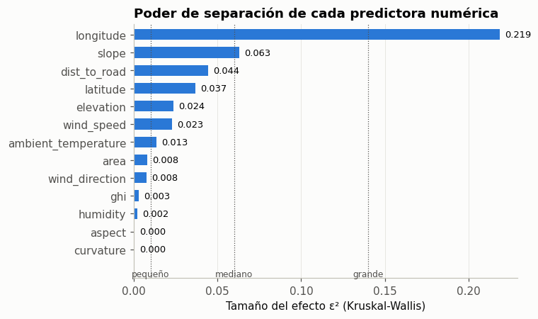
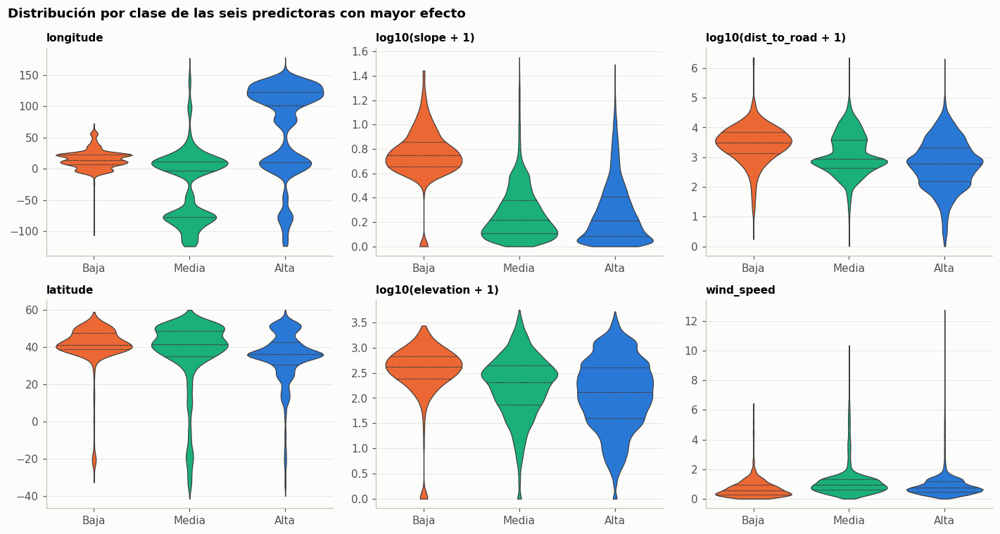
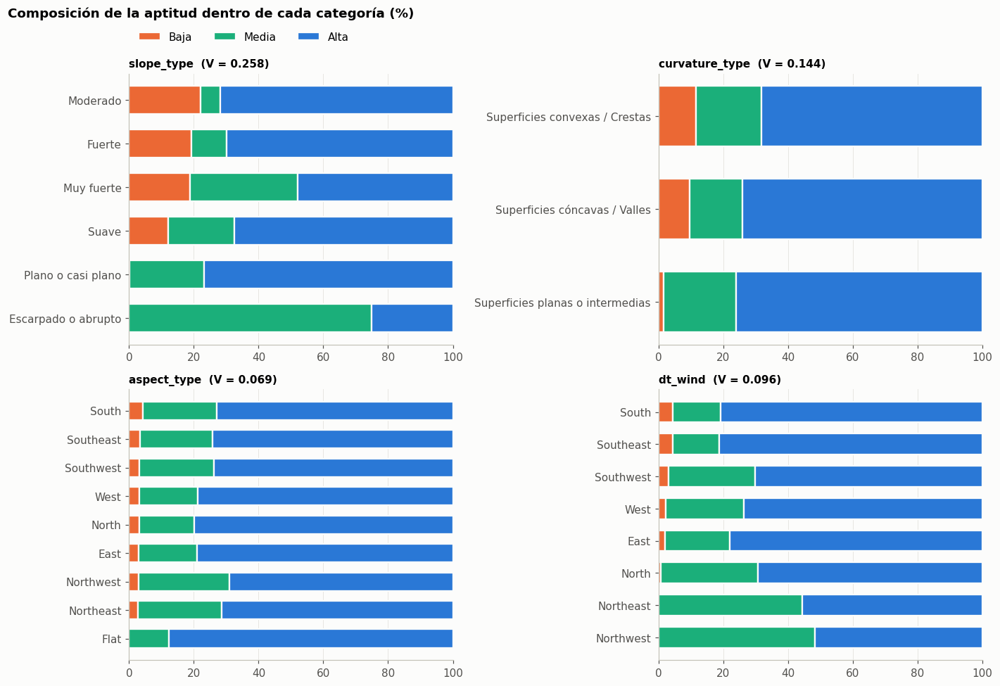

6. Análisis bivariado con la variable objetivo#
Se mide cuánto separa cada predictora las tres clases de aptitud.
Numéricas: prueba de Kruskal-Wallis, no paramétrica porque varias variables son muy asimétricas, con tamaño del efecto ε² (0.01 pequeño, 0.06 mediano, 0.14 grande).
Categóricas: prueba χ² con V de Cramér (0.1 débil, 0.3 moderada, 0.5 fuerte).
Con 58 978 observaciones casi cualquier diferencia es «significativa», así que la lectura se basa en el tamaño del efecto, no en el p-valor.
6.1 Predictoras numéricas#
res = pd.DataFrame({c: kruskal_by_class(df, c) for c in NUMERIC}).T
med = df.groupby(TARGET, observed=True)[NUMERIC].median().T.add_prefix("mediana_")
res = pd.concat([res, med], axis=1).sort_values("epsilon2", ascending=False)
res.style.format({"H": "{:,.0f}", "p_valor": "{:.1e}", "epsilon2": "{:.3f}"}).format(
"{:.2f}", subset=[c for c in res.columns if c.startswith("mediana_")])
| H | p_valor | epsilon2 | mediana_Baja | mediana_Media | mediana_Alta | |
|---|---|---|---|---|---|---|
| longitude | 12,891 | 0.0e+00 | 0.219 | 13.61 | -2.97 | 101.08 |
| slope | 3,713 | 0.0e+00 | 0.063 | 4.57 | 0.65 | 0.64 |
| dist_to_road | 2,605 | 0.0e+00 | 0.044 | 3133.53 | 900.06 | 606.72 |
| latitude | 2,176 | 0.0e+00 | 0.037 | 41.09 | 41.53 | 36.12 |
| elevation | 1,396 | 8.7e-304 | 0.024 | 415.50 | 207.00 | 132.00 |
| wind_speed | 1,333 | 3.7e-290 | 0.023 | 0.56 | 0.93 | 0.75 |
| ambient_temperature | 785 | 3.1e-171 | 0.013 | 12.50 | 11.75 | 14.12 |
| area | 341 | 8.7e-75 | 0.008 | 2645.21 | 14302.10 | 7709.43 |
| wind_direction | 445 | 1.8e-97 | 0.008 | 200.11 | 230.59 | 209.98 |
| ghi | 167 | 5.8e-37 | 0.003 | 4.98 | 4.25 | 4.48 |
| humidity | 112 | 4.0e-25 | 0.002 | 68.33 | 68.33 | 70.64 |
| aspect | 22 | 1.4e-05 | 0.000 | 175.12 | 175.60 | 168.93 |
| curvature | 20 | 5.7e-05 | 0.000 | 0.00 | 0.00 | 0.00 |
fig, ax = plt.subplots(figsize=(7, 4.2))
r = res["epsilon2"].sort_values()
ax.barh(r.index, r.values, height=0.6, color=CLASS_COLORS["Alta"])
for y, v in enumerate(r.values):
ax.text(v + 0.003, y, f"{v:.3f}", va="center", fontsize=8.5)
for x, lab in [(0.01, "pequeño"), (0.06, "mediano"), (0.14, "grande")]:
ax.axvline(x, color=NEUTRAL, lw=0.8, ls=":")
ax.text(x, -1.1, lab, fontsize=8, color=NEUTRAL, ha="center", va="top")
ax.set_ylim(-1.6, len(r) - 0.4)
ax.set_xlabel("Tamaño del efecto ε² (Kruskal-Wallis)")
ax.set_title("Poder de separación de cada predictora numérica")
ax.grid(axis="y", visible=False)
plt.tight_layout(); plt.show()

top_vars = ["longitude", "slope", "dist_to_road", "latitude", "elevation", "wind_speed"]
fig, axes = plt.subplots(2, 3, figsize=(13, 7))
for ax, col in zip(axes.flat, top_vars):
data = df[[col, TARGET]].dropna().copy()
if col in ("dist_to_road", "slope", "elevation"):
data[col] = np.log10(data[col].clip(lower=0) + 1)
ax.set_title(f"log10({col} + 1)", fontsize=10)
else:
ax.set_title(col, fontsize=10)
sns.violinplot(data=data, x=TARGET, y=col, order=CLASS_ORDER, hue=TARGET,
palette=CLASS_COLORS, legend=False, ax=ax, inner="quartile", saturation=1,
linewidth=0.8, cut=0)
ax.set_xlabel(""); ax.set_ylabel("")
fig.suptitle("Distribución por clase de las seis predictoras con mayor efecto",
x=0.01, ha="left", fontweight="bold")
plt.tight_layout(); plt.show()

Lectura
longitude(ε² = 0.219, efecto grande) es por lejos la más discriminante. La mediana es 101° en Alta (Asia oriental), 13.6° en Baja (Europa) y −3.0° en Media (mezcla de Europa y EE. UU.). Confirma lo visto en el capítulo 5: separa regiones más que condiciones físicas.slope(ε² = 0.063, efecto mediano) es la variable física más relevante. La mediana de las plantas Baja es 4.6°, unas siete veces la de Media y Alta (≈ 0.64°). Una pendiente pronunciada se asocia con baja aptitud.dist_to_road(0.044) yelevation(0.024): las plantas Baja están más lejos de las vías (mediana de 3.1 km frente a 0.6 km en Alta) y más altas (416 m frente a 132 m). Es el perfil de terreno montañoso y remoto.latitude(0.037) ywind_speed(0.023) tienen efectos pequeños.curvature,aspect,humidity,ghi,areaywind_directiontienen efecto prácticamente nulo (ε² < 0.01) por sí solas. Pueden aportar en interacción con otras variables, lo que favorece modelos no lineales (árboles y ensambles).
6.2 Predictoras categóricas#
cv = pd.DataFrame({c: cramers_v(df[c], df[TARGET]) for c in CATEGORICAL}).T
cv.sort_values("V", ascending=False).style.format(
{"chi2": "{:,.0f}", "p_valor": "{:.1e}", "V": "{:.3f}"})
| chi2 | p_valor | V | |
|---|---|---|---|
| slope_type | 7,853 | 0.0e+00 | 0.258 |
| curvature_type | 2,458 | 0.0e+00 | 0.144 |
| dt_wind | 1,089 | 9.7e-224 | 0.096 |
| aspect_type | 562 | 2.2e-109 | 0.069 |
fig, axes = plt.subplots(2, 2, figsize=(13, 9))
for ax, col in zip(axes.flat, CATEGORICAL):
t = pd.crosstab(df[col], df[TARGET], normalize="index")[CLASS_ORDER] * 100
t = t.sort_values("Baja")
left = np.zeros(len(t))
for c in CLASS_ORDER:
ax.barh(t.index, t[c], left=left, height=0.65, color=CLASS_COLORS[c],
label=c, edgecolor=SURFACE, linewidth=1.5)
left += t[c].values
ax.set_title(f"{col} (V = {cv.loc[col, 'V']:.3f})", fontsize=10)
ax.set_xlim(0, 100); ax.grid(axis="y", visible=False)
axes.flat[0].legend(ncol=3, loc="lower left", bbox_to_anchor=(0, 1.08))
fig.suptitle("Composición de la aptitud dentro de cada categoría (%)",
x=0.01, ha="left", fontweight="bold")
plt.tight_layout(); plt.show()

slope_type(V = 0.258, asociación moderada) es la categórica más informativa. En terreno plano o casi plano solo el 0.1 % de las plantas es Baja; en terreno moderado lo es el 22.1 % y en fuerte el 19.2 %. Es coherente conslope.curvature_type(V = 0.144): las superficies convexas (crestas) y cóncavas (valles) tienen entre 6 y 8 veces más plantas Baja que las planas (11.6 % y 9.7 % frente a 1.5 %). Aunquecurvaturenumérica no separa las clases, su versión categórica sí. Esto sugiere que importa la magnitud de la curvatura y no su signo, por lo que vale la pena probarabs(curvature).dt_wind(0.096) yaspect_type(0.069) tienen una asociación débil.